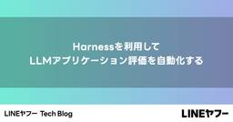
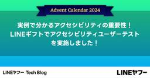

LINEヤフー Tech Blog
フィード

社内コミュニケーションを支える用語集「Words」 19
19
LINEヤフー Tech Blog
LINEヤフー Advent Calendar 2024の記事です。こんにちは、LINEヤフー株式会社でテクニカルライターとして働いている古木です。私は、LINE Developersサイトの技...
3日前

Harnessを利用してLLMアプリケーション評価を自動化する
LINEヤフー Tech Blog
LLMアプリケーションテストの難しさGPT-4のような大規模言語モデル（large language model、以下LLM）が普及し、それを活用したLLMアプリケーションもさまざまな分野で本格的に...
4日前

LINEのアプリ開発を支えるコードオーナー管理 16
LINEヤフー Tech Blog
LINEヤフー Advent Calendar 2024の記事です。はじめにこんにちは、iOSアプリエンジニアの羽柴です。本記事では、LINEの膨大なソースコードを扱う上で欠かせない「コードオ...
4日前

実例で分かるアクセシビリティの重要性！LINEギフトでアクセシビリティユーザーテストを実施しました！ 1
LINEヤフー Tech Blog
LINEヤフー Advent Calendar 2024の記事です。こんにちは。LINEギフトでフロントエンドエンジニアをやっている山本です。この記事では、LINEギフトで先日行ったアクセシビ...
5日前

LIFFアプリの開発者体験向上にコントリビュートしてきた話（インターンレポート）
LINEヤフー Tech Blog
LINEヤフー Advent Calendar 2024の記事です。はじめにこんにちは。静岡大学大学院 総合科学技術研究科 情報学専攻 修士1年の遠藤裕斗です。この夏、LINEヤフーが主催する...
11日前
日本で流行しているランサムウェア「8Base」の解析結果
LINEヤフー Tech Blog
LINEヤフー Advent Calendar 2024の記事です。こんにちは。CISO管掌の脅威情報分析対応チームでセキュリティエンジニアとして活動している首浦です。本記事ではランサムウェアに...
12日前
自社開発のマルチモーダル基盤モデルを用いたYahoo!オークションの出品審査効率化
LINEヤフー Tech Blog
LINEヤフー Advent Calendar 2024の参加記事です。こんにちは。LINEヤフーのFoundation Models開発担当チームです。われわれのチームでは、画像と言語のマルチ...
17日前
アクセシブルなPDFを作ろうとする理由
LINEヤフー Tech Blog
LINEヤフー Advent Calendar 2024の記事です。Webアクセシビリティチーム中野です。プロダクトとウェブサイトにおける、アクセシビリティの向上と啓発を行っています。今年の...
18日前
Testcontainersを利用したApache Kyuubiのユニットテスト環境構築
LINEヤフー Tech Blog
LINEヤフー Advent Calendar 2024の参加記事です。こんにちは。LINEヤフー株式会社ビジネスPF開発本部で LINE DMP の開発を担当している yamaguchi です...
19日前
アドベントカレンダー開催します
LINEヤフー Tech Blog
クリスマスシーズンの風物詩、アドベントカレンダーを今年も開催します。LINEヤフー Advent Calendar 2024LINEヤフーも合併して新会社となってから1年がたち、多くのメディアが...
19日前
Vue Fes Japan 2024 企業ブース企画 クイズの解答と解説
LINEヤフー Tech Blog
こんにちは、Webフロントエンドエンジニアの爲本、山本です。先日開催された 「Vue Fes Japan 2024」にて、LINEヤフー株式会社はゴールドスポンサーを務めさせていただきました。LIN...
23日前
コード品質向上のテクニック：第52回 分岐を伐り根を枯らす
LINEヤフー Tech Blog
こんにちは。コミュニケーションアプリ「LINE」のモバイルクライアントを開発している石川です。この記事は、毎週木曜の定期連載 "Weekly Report" 共有の第 52 回です。 LINEヤフー...
23日前
年に一度のJavaScriptの祭典の様子をお届け！JSConf JP 2024イベントレポート
LINEヤフー Tech Blog
こんにちは。フロントエンドエンジニアの花谷(@potato4d)です。LINEヤフーでは、11月23日（土）に開催されたJSConf JP 2024へ参加・協賛を行いました。今回私自身もスポンサー...
25日前
2024年12月の技術系イベント予定
LINEヤフー Tech Blog
LINEヤフー株式会社では、技術に関するイベントや勉強会の主催・協賛などを行っています。最新情報は各リンク先でご確認ください。タイミングによっては、申し込み開始前や既に満席となっていることがあります。...
1ヶ月前
Tech Week 2024の社内ハッカソン、Hack Dayに参加しました！
LINEヤフー Tech Blog
こんにちは。LINEアルバムや共有サービスを開発しているAndroidエンジニアのUjin Jeong、Product UX組織でCommon UXを担当しているデザイナーのSeunghee Chun...
1ヶ月前
コード品質向上のテクニック：第51回 確信的な質問
LINEヤフー Tech Blog
こんにちは。コミュニケーションアプリ「LINE」のモバイルクライアントを開発している石川です。この記事は、毎週木曜の定期連載 "Weekly Report" 共有の第 51 回です。 LINEヤフー...
1ヶ月前
LINEヤフーはJSConf JP 2024にPremium Sponsorとして協賛します - 登壇内容とブースコンテンツのお知らせ
LINEヤフー Tech Blog
こんにちは！ フロントエンドエンジニアのodanです。LINEヤフー株式会社は、2024年11月23日に開催されるJSConf JP 2024にPremium Sponsorとして協賛します。この記...
1ヶ月前
LINE iOSアプリにおけるXcode 16対応への取り組み
LINEヤフー Tech Blog
はじめにこんにちは、コミュニケーションアプリ「LINE」のiOSクライアントアプリ開発を担当している、モバイル・ディベロッパーエクスペリエンスチーム（以下MDX）所属のfreddiです。この記事で...
1ヶ月前
大規模ネットワークトポロジーシステムの設計・構築（インターンレポート）
LINEヤフー Tech Blog
概要はじめに東京大学情報理工学系研究科修士1年の山根那夢達です。普段はネットワークパケットの冗長化に関する研究を行っています。2024年8月19日から9月27日までの6週間、ネットワーク領域にて就...
1ヶ月前
PQCへの旅路：量子コンピュータ時代にデータを守るために
LINEヤフー Tech Blog
はじめにこんにちは。Security R&D チームのHan Juhongです。私たちのチームは、LINEヤフーグループのサービス全般のセキュリティ強化を目的に、さまざまなセキュリティ技術の研究、開...
1ヶ月前
コード品質向上のテクニック：第50回 たった一つの真実
LINEヤフー Tech Blog
こんにちは。コミュニケーションアプリ「LINE」のモバイルクライアントを開発している石川です。この記事は、毎週木曜の定期連載 "Weekly Report" 共有の第 50 回です。 LINEヤフー...
1ヶ月前
高専生がものづくりで輝く！「高専プロコン」を支えるLINEヤフーの取り組み
LINEヤフー Tech Blog
こんにちは！ 今回は、LINEヤフーの社員が奈良県奈良市で開催された第35回全国高等専門学校プログラミングコンテスト（以下、高専プロコン）に参加し、高専生が制作したプロダクトの魅力を伝えるため、ライブ...
1ヶ月前
LINEギフトユーザーの休眠予測と休眠予備群の特徴抽出（インターンレポート）
LINEヤフー Tech Blog
こんにちは、東京科学大学大学院工学院情報通信系修士1年の城戸晴輝です。普段は自然言語処理の研究をしています。今回ご縁をいただき2024年8月19日からの8週間、データサイエンス統括本部 ソーシャルコマ...
1ヶ月前
Tech Week 2024で東京に行ってきました
LINEヤフー Tech Blog
こんにちは。LINE VOOMのレコメンドシステムの開発を担当しているMLエンジニアChang Hyun Lee、メディアプラットフォームのサーバー開発者Heesung Choです。私たちは、2024...
1ヶ月前
コード品質向上のテクニック：第49回 虚実皮膜の依存
LINEヤフー Tech Blog
こんにちは。コミュニケーションアプリ「LINE」のモバイルクライアントを開発している石川です。この記事は、毎週木曜の定期連載 "Weekly Report" 共有の第 49 回です。 LINEヤフー...
1ヶ月前
Vue Fes Japan 2024に参加しました
LINEヤフー Tech Blog
こんにちは、フロントエンドエンジニアのYusukeです。普段は、LINE公式アカウントに関する開発を行なっています。2024年10月19日に大手町プレイス ホール＆カンファレンスにて開催された「Vu...
1ヶ月前
LINEギフトにおけるAPIのパフォーマンス改善とPyroscopeの導入（インターンレポート）
LINEヤフー Tech Blog
はじめに東京大学大学院情報理工学系研究科修士1年の小濵晴天です。2024年8月17日から9月27日まで6週間、LINEヤフー株式会社のLINEギフトのSRE業務を担当するチームで就業型インターンシッ...
1ヶ月前
コード品質向上のテクニック：第48回 ワイルドすぎる引数
LINEヤフー Tech Blog
こんにちは。コミュニケーションアプリ「LINE」のモバイルクライアントを開発している石川です。この記事は、毎週木曜の定期連載 "Weekly Report" 共有の第 48 回です。 LINEヤフー...
2ヶ月前
Kafka ProducerにおけるFailure Injection Testing（インターンレポート）
LINEヤフー Tech Blog
北海道大学大学院情報科学院修士1年の山村尚也です。2024年9月9日から10月4日までの4週間、LINEアプリのトーク機能部分のバックエンドの開発を担当しているチームでインターンをさせていただきました...
2ヶ月前
メンテナンス性・認知負荷改善のためのETLパイプライン再設計（インターンレポート）
LINEヤフー Tech Blog
はじめにこんにちは！ 東京工業大学（東京科学大学理工学系）理学院物理学系 修士1年の松本侑真です。2024年8月26日から6週間、私はアナリティクスエンジニアリング1（AE1）チームのインターンシッ...
2ヶ月前
LINE公式アカウントチームのバックエンド開発に関わった話（インターンレポート）
LINEヤフー Tech Blog
はじめにこんにちは。東京大学大学院情報理工学系研究科修士2年の東大樹です。8月13日から4週間、LINEヤフー株式会社の就業型インターンに参加させていただきました。本インターンでは、ビジネスPF開...
2ヶ月前
コード品質向上のテクニック：第47回 不履行権の不履行
LINEヤフー Tech Blog
こんにちは。コミュニケーションアプリ「LINE」のモバイルクライアントを開発している石川です。この記事は、毎週木曜の定期連載 "Weekly Report" 共有の第 47 回です。 LINEヤフー...
2ヶ月前
DroidKaigi 2024 Code Bug Fix Challenge 2問目
LINEヤフー Tech Blog
こんにちは。AndroidアプリエンジニアのChigitaとIkedaです。先日開催されたDroidKaigi 2024のLINEヤフー企業ブースでは、「Code Bug Fix Challenge...
2ヶ月前
LBaaSにおけるQUIC-LBの実装と検証（インターンレポート）
LINEヤフー Tech Blog
はじめにこんにちは。京都大学大学院情報学研究科修士1年の上田蒼一朗と申します。私はCloud Infrastructure本部NetDev部というところで、6週間のインターンシップに参加しました。...
2ヶ月前
2024年11月の技術系イベント予定
LINEヤフー Tech Blog
LINEヤフー株式会社では、技術に関するイベントや勉強会の主催・協賛などを行っています。最新情報は各リンク先でご確認ください。タイミングによっては、申し込み開始前や既に満席となっていることがあります。...
2ヶ月前
DroidKaigi 2024 Code Bug Fix Challenge 1問目
LINEヤフー Tech Blog
こんにちは。AndroidアプリエンジニアのTakanashiとShimizuです。先日開催されたDroidKaigi 2024のLINEヤフー企業ブースでは、「Code Bug Fix Chall...
2ヶ月前
KDD 2024 参加レポート
LINEヤフー Tech Blog
LINEヤフーでは、最新の知見を業務に取り入れるべく論文の社内共有会や社外研究会への参加などを積極的に行っています。その一環として、業務に関連するトピックを扱う海外カンファレンスに社員が会社負担で参加...
2ヶ月前
コード品質向上のテクニック：第46回 関数は見かけによらず
LINEヤフー Tech Blog
こんにちは。コミュニケーションアプリ「LINE」のモバイルクライアントを開発している石川です。この記事は、毎週木曜の定期連載 "Weekly Report" 共有の第 46 回です。 LINEヤフー...
2ヶ月前
DroidKaigi 2024 に参加しました
LINEヤフー Tech Blog
2024年9月11日（水）〜9月13日（金）の3日間で開催された DroidKaigi2024 に、LINEヤフー株式会社はゴールドスポンサーとして参加しました。今年は10周年を迎えることもあり、過...
2ヶ月前
LINE公式アカウントのページ移行に伴うコンポーネント開発（インターンレポート）
LINEヤフー Tech Blog
初めまして。東京工業大学情報理工学院修士一年の池田むつきです。私は2024年のサマーインターンシップで、LINE公式アカウントのフロントエンドの実開発に参加しました。今回のブログでは、実際にどのよう...
2ヶ月前
コード品質向上のテクニック：第45回 終わり null ならすべてよし？
LINEヤフー Tech Blog
こんにちは。コミュニケーションアプリ「LINE」のモバイルクライアントを開発している石川です。この記事は、毎週木曜の定期連載 "Weekly Report" 共有の第 45 回です。 LINEヤフー...
2ヶ月前
LINEヤフーエンジニアによるKubeDay Japan 2024参加レポート
LINEヤフー Tech Blog
はじめにこんにちは。プライベートクラウドの開発運用、およびOSPOを兼任している早川です。KubeDay JapanはCloud Native Computing Foundation（以下、CN...
2ヶ月前
第57回情報科学若手の会にスポンサーとして参加してきました
LINEヤフー Tech Blog
こんにちは、ソフトウェアエンジニアの井上（@musaprg）です。普段は、LINEヤフーで使われている社内向け大規模プライベートクラウドのうち、いわゆるKubernetes as a Service（...
2ヶ月前
Redis DBaaSを用いたアプリケーション開発を支える取り組み
LINEヤフー Tech Blog
こんにちは、LINEヤフー株式会社でRedisチームに所属している加藤です。現在はLINEヤフーの社内向けのDatabase as a ServiceとしてRedis DBaaSの開発と運用を行ってい...
2ヶ月前
FIDO2クライアントSDK オープンソースのご紹介
LINEヤフー Tech Blog
はじめにはじめまして。セキュリティ開発チームでFIDO2クライアントの開発を担当しているキム・ドヨン、キム・ヨンヒョンと申します。公開鍵暗号方式に基づく FIDO 認証は、パスワードやSMS OT...
2ヶ月前
LINEアプリのクライアントサイドの開発者が作る「コードレビュー文化」
LINEヤフー Tech Blog
LINEヤフー株式会社の開発組織では、開発文化を改善するためにさまざまな試みを行っています。今回は、LINEのクライアントアプリの開発プロセスを改善を担うMobile Developer Experi...
3ヶ月前
社内イベントで視覚障害を体験してもらいました（スクリーンリーダーのチートシート配布中）
LINEヤフー Tech Blog
こんにちは、WebアクセシビリティチームのKeishimaです。先日社内で開催されたTech Week 2024にWebアクセシビリティチームとしてブースを出展しました。この記事では、私たちがブースを...
3ヶ月前
コード品質向上のテクニック：第44回 貧血の誤診
LINEヤフー Tech Blog
こんにちは。コミュニケーションアプリ「LINE」のモバイルクライアントを開発している石川です。この記事は、毎週木曜の定期連載 "Weekly Report" 共有の第 44 回です。 LINEヤフー...
3ヶ月前
コード品質向上のテクニック：第43回 値の帰還
LINEヤフー Tech Blog
こんにちは。コミュニケーションアプリ「LINE」のモバイルクライアントを開発している石川です。この記事は、毎週木曜の定期連載 "Weekly Report" 共有の第 43 回です。 LINEヤフー...
3ヶ月前
2024年10月の技術系イベント予定
LINEヤフー Tech Blog
LINEヤフー株式会社では、技術に関するイベントや勉強会の主催・協賛などを行っています。最新情報は各リンク先でご確認ください。タイミングによっては、申し込み開始前や既に満席となっていることがあります。...
3ヶ月前